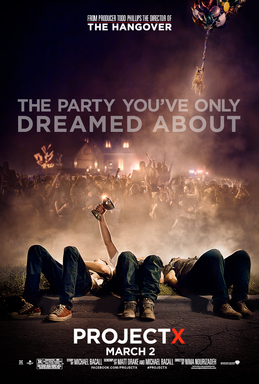

My Top 4 Favorite Movies
My Favorite Movie Project X
Thomas (Thomas Mann), Costa (Oliver Cooper), and JB (Jonathan Daniel Brown) are three anonymous high-school seniors who are determined to finally make their mark. But how to make themselves unforgettable in the annals of high-school history? With an epic party, of course! The idea is innocent enough, but nothing could prepare the three friends for this shindig. As word of the soiree's awesomeness spreads, dreams are ruined, records are blemished, and legends are born.
Click here for Project X Trailer
My Second Favorite Movie Spider-Man No Way Home
With Spider-Man's identity now revealed, our friendly neighborhood web-slinger is unmasked and no longer able to separate his normal life as Peter Parker from the high stakes of being a superhero. When Peter asks for help from Doctor Strange, the stakes become even more dangerous, forcing him to discover what it truly means to be Spider-Man.
.jpeg)
Click here for Spiderman Trailer
My Third Favorite Movie Rocky 4
After reclaiming the boxing championship title, Rocky Balboa (Sylvester Stallone) plans to retire and live with his wife, Adrian (Talia Shire). However, during an exhibition match, Rocky's friend Apollo Creed (Carl Weathers) is mercilessly beaten to death by hulking Russian newcomer Ivan Drago (Dolph Lundgren). Rocky vows payback against Drago and flies to Russia to train for a Christmas Day fight. Despite their different training methods, Rocky and Drago both wage a long and intense match.
.jpeg)
Click here for Rocky 4 trailer
My Fourth Favorite Movie The Batman
The course uses psychology to analyze Batman and Batman to teach psychology. Batman is one of the best-known characters in the world, and interest in him has lasted through countless incarnations since he debuted in Detective Comics #27 in 1939. Why does this superhero without superpowers fascinate us? What does that fascination say about us? This course explores these and other intriguing questions about the masked vigilante: Does Batman have PTSD? Why does he fight crime? Why as a vigilante? Why the mask, the bat, and the underage partner? Why are his most intimate relationships with “bad girls” he ought to lock up? And why won’t he kill that homicidal clown?

Click here For The Batman Trailer/p>